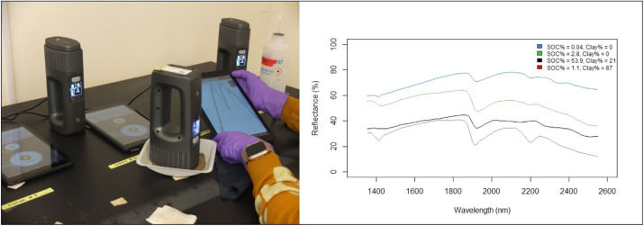

## Packages
library("tidyverse")
library("curl")
library("qs") # >=0.25.5
## Separate files
soil <- "https://storage.googleapis.com/soilspec4gg-public/neospectra_soillab_v1.2.qs"
soil <- qread_url(soil)
nir <- "https://storage.googleapis.com/soilspec4gg-public/neospectra_nir_v1.2.qs"
nir <- qread_url(nir)
## Join
neospectra <- right_join(soil, nir, by = c("id.sample_local_c"))4 Neospectra database
Recent advances in hardware technology have enabled the development of handheld sensors with similar performance specifications as laboratory-grade near-infrared (NIR) spectrometers.
We have compiled a hand-held NIR spectral library (1350-2550 nm) using the NeoSpectra Handheld NIR Analyzer developed by Si-Ware. Each scanner is fitted with Fourier-Transform technology based on the semiconductor Micro Electromechanical Systems (MEMS) manufacturing technique, promising accuracy and consistency between devices.

This library includes 2,106 distinct mineral soil samples scanned across 9 of these portable low-cost NIR spectrometers (indicated by serial no). 2,016 of these soil samples were selected to represent the diversity of mineral soils found in the United States, and 90 samples were selected across Ghana, Kenya, and Nigeria.
519 of the US samples were selected and scanned by Woodwell Climate Research Center. These samples were queried from the USDA NRCS NSSC-KSSL Soil Archives as having a complete set of eight measured properties (TC, OC, TN, CEC, pH, clay, sand, and silt). They were stratified based on the major horizon and taxonomic order, omitting the categories with less than 500 samples. Three percent of each stratum (i.e., a combination of major horizon and taxonomic order) was then randomly selected as the final subset retrieved from KSSL’s physical soil archive as 2-mm sieved samples.
The remaining 1,604 US samples were queried from the USDA NRCS NSSC-KSSL Soil Archives by the University of Nebraska - Lincoln to meet the following criteria: Lower depth <= 30 cm, pH range 4.0 to 9.5, Organic carbon <10%, Greater than lower detection limits, Actual physical samples available in the archive, Samples collected and analyzed from 2001 onwards, Samples having complete analyses for high-priority properties (Sand, Silt, Clay, CEC, Exchangeable Ca, Exchangeable Mg, Exchangeable K, Exchangeable Na, CaCO3, OC, TN), & MIR scanned.
All samples were scanned dry 2mm sieved. ~20g of sample was added to a plastic weighing boat where the NeoSpectra scanner would be placed down to make direct contact with the soil surface. The scanner was gently moved across the surface of the sample as 6 replicate scans were taken. These replicates were then averaged so that there is one spectra per sample per scanner in the resulting database.


4.1 Useful resources
- A data description paper was published about the Neospectra dataset. Please refer to it for getting more information about the measurements and model calibration. [1]
- We analyzed the consistency of multiple Neospectra scanners and how models are impacted by the instrument’s variability. [2]
- We developed a study assessing the capacity of the Neospectra scanner in estimating soil organic carbon stocks across a few farms in Massachusetts, USA. The paper include the analysis of global and local modeling strategies, uncertainty propagation for inference, and cost-benefit analysis. (add link)
4.2 Database access
A persistent copy of the database is hosted on Zenodo. Please use the following references when using the Neospectra database:
Partida, C., Safanelli, J. L., Mitu, S. M., Murad, M. O. F., Ge, Y., Ferguson, R., … Sanderman, J. (2025). Building a near-infrared (NIR) soil spectral dataset and predictive machine learning models using a handheld NIR spectrophotometer. Data in Brief, 58(111229), 111229. https://doi.org/10.1016/j.dib.2024.111229
Sanderman, J., Partida, C., Safanelli, J. L., Mitu, S. M., Ge, Y., Murad, O., & Shepherd, K. (2024). Near-infrared (NIR) soil spectral library using the NeoSpectra Handheld NIR Analyzer by Si-Ware (v1.2) [Dataset]. Zenodo. https://doi.org/10.5281/zenodo.13122321
4.2.1 Google Cloud Bucket
Use the following URLs to access the whole database levels:
Compressed csv
https://storage.googleapis.com/soilspec4gg-public/neospectra_soillab_v1.2.csv.gz
https://storage.googleapis.com/soilspec4gg-public/neospectra_soilsite_v1.2.csv.gz
https://storage.googleapis.com/soilspec4gg-public/neospectra_nir_v1.2.csv.gz
https://storage.googleapis.com/soilspec4gg-public/neospectra_mir_v1.2.csv.gz
qs format (preferred on R)
https://storage.googleapis.com/soilspec4gg-public/neospectra_soillab_v1.2.qs
https://storage.googleapis.com/soilspec4gg-public/neospectra_soilsite_v1.2.qs
https://storage.googleapis.com/soilspec4gg-public/neospectra_nir_v1.2.qs
https://storage.googleapis.com/soilspec4gg-public/neospectra_mir_v1.2.qs
Example with R.
4.3 Database description
The Neospectra database follows the same specification of the OSSL for soil and site information. For the near-infrared (NIR) spectra, however, additional information is provided for scanning laboratory, scanner code, and scanning accessory.
NIR is provided in reflectance units per wavelength, with values usually ranging between 0 and 1 as fraction percent. The spectral range imported into the OSSL falls between 1350 and 2550 nm, with an interval of 2 nm.
One can convert reflectance (R) values to absorbance units (A) as A = log10(1/R), or backtransform with R = 1/(10^A). Similarly, wavenumber (WN, in cm-1) can be converted to wavelength (WL, in nm) with WN = 1/(WL*10000000), or backtransform with WL = 1/(WL*10000000). The factor 10M is used to convert cm to nm.
4.3.1 id.sample_local_c
- 📚 Description: Soil sample identifier.
- 🔢 Type: string.
- 📖 Example: 30747.
4.3.2 id.scan_local_c
- 📚 Description: Scan identifier (one average spectra per scanner).
- 🔢 Type: string.
- 📖 Example: NEO1_030747.
4.3.3 scan.lab_utf8_txt
- 📚 Description: Scanning laboratory.
- 🔢 Type: string.
- 📖 Example: Woodwell.
4.3.4 scan.visnir.date.begin_iso.8601_yyyy.mm.dd
- 📚 Description: Begin date of scanning following YYYY-MM-DD format (ISO 8601).
- 🔢 Type: string.
- 📖 Example: 2021-01-01.
4.3.5 scan.visnir.date.end_iso.8601_yyyy.mm.dd
- 📚 Description: Begin date of scanning following YYYY-MM-DD format (ISO 8601).
- 🔢 Type: string.
- 📖 Example: 2022-12-31.
4.3.6 scan.nir.model.name_utf8_txt
- 📚 Description: NIR scanner code.
- 🔢 Type: string.
- 📖 Example: NEO1.
4.3.7 scan.nir.model.serialnumber_utf8_in
- 📚 Description: NIR scanner serial number.
- 🔢 Type: numeric.
- 📖 Example: 21020033.
4.3.8 scan.nir.accessory.used_utf8_txt
- 📚 Description: Yes or No for scanning accesory.
- 🔢 Type: string.
- 📖 Example: y.
4.3.9 scan.visnir.method.preparation_any_txt
- 📚 Description: Soil sample preparation before scanning.
- 🔢 Type: string.
- 📖 Example: <2 mm.
4.3.10 scan.visnir.license.title_ascii_txt
- 📚 Description: Dataset scans license.
- 🔢 Type: string.
- 📖 Example: CC-BY.
4.3.11 scan.visnir.license.address_idn_url
- 📚 Description: Dataset scans license url.
- 🔢 Type: string.
- 📖 Example: https://creativecommons.org/licenses/by/4.0/.
4.3.12 scan.visnir.doi_idf_url
- 📚 Description: Digital object identifier (DOI) url of the dataset scans.
- 🔢 Type: string.
- 📖 Example: https://doi.org/10.5281/zenodo.7586622.
4.3.13 scan.visnir.contact.name_utf8_txt
- 📚 Description: Dataset scans contact name.
- 🔢 Type: string.
- 📖 Example: Jonathan Sanderman.
4.3.14 scan.visnir.contact.email_ietf_txt
- 📚 Description: Dataset scans contact email.
- 🔢 Type: string.
- 📖 Example: jsanderman@woodwellclimate.org.
4.3.15 scan_nir.1350_ref
- 📚 Description: Reflectance in fraction unit, first wavelength in the 1350-2550 nm range.
- 🔢 Type: numeric.
- 📖 Example: 0.10403320.
4.3.16 scan_nir.2550_ref
- 📚 Description: Reflectance in fraction unit, last wavelength in the 1350-2550 nm range.
- 🔢 Type: numeric.
- 📖 Example: 0.3622029.